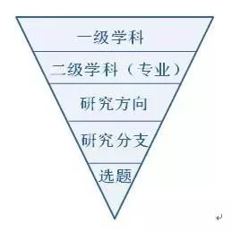
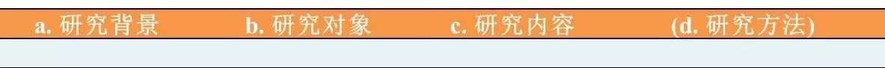
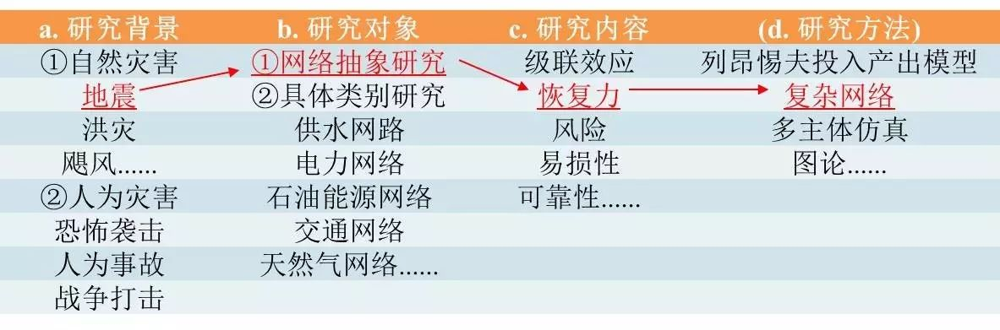

收录于合集
以下文章来源于募格学术 ，作者爱猫猫的Z少校
 募格学术 .
募格学术 .
这里有你最关心的学术与生活资讯，帮助科研工作者更好地发表英文学术文章，助力于中国学术之崛起。

研究生如何确定科研论文选题？一位新晋青椒的倾情解答
转眼之间，距离我留校工作已经半年多了。这半年多里，虽然并没有直接在教研一线岗位，但对科研的热情着实没有减少哈，刚刚加班加点完成了基金的提交，希望会有个好结果。其实，在我导师这个团队中，我已经连续三年进行基金写作了，要是此次首次以我名义申报的基金有个好结果，一定再写一篇关于基金的给大家分享心得啊。在此先言归正传，今天准备给大家谈谈刚入门的研究生，如何进行科研论文的选题。
去年我曾写过一篇文章，就是科研新手如何应对SCI审稿人，文章被亲爱的募格小编发表后，学校有师妹跟我说：“师兄，虽然应对审稿人很麻烦，可是那至少是论文写出来并已经投稿了的，可我到现在都不知道论文该做啥子。你知道在学校没有论文就像在后宫没有孩子，关键是人家已经有好几个孩子了，这可如何是好”。诚然，结合我当年刚读博士时的感受，如何确定自己的论文选题，确实是一件令人揪心的事。
我们在这讨论的论文选题，主要指的是刚进入研究生阶段，我们准备着手研究的第一个科学问题，即我们将发表的第一篇科研论文，所要解决的问题。对于研究生的毕业论文，我觉得应该是我们解决了几个相互关联的问题，形成了几篇论文，从而最后将这些问题按照一定的逻辑主线串起来，将这几篇论文的内容整合起来，就形成了毕业论文。这也是我所推荐的，学术类研究生毕业的最佳路径。
对于刚入门的研究生，其科研论文选题，其实是跟导师与团队有很大关系的。有的团队会直接给你指定研究选题，上来即可直接开展研究并出论文。而很多同学则需要自己去发现研究问题，这个过程往往需费时半年至一年时间。因而对于论文发得很多的同学，往往并不是一己之功，而是站在团队肩膀上的缘故。对于论文发的较少的同学，并不是智商或努力程度不如别人，而是你经历了更多一环的科研训练，即——独立选题，这将给你今后的科研生涯带来很大裨益。在断奶之后，你将比其他人拥有更强的独立选题、独立探索和自我开创的能力。
按照我的理解，我们研究生在确定论文选题之前，需要首先逐步确定以下所示层级：

而研究生刚入门时，团队给你指导到哪个层级，则直接影响到你确定选题的艰辛程度。由于一级学科和二级学科在你报考时便已确定，因而根据我的观察，研究生入门之后，结合团队给予的指导，其科研论文的选题指导可分为四类：（1）完全无指导；（2）给定研究方向，自我确定；（3）给定研究分支，自我确定；（4）团队完全给定研究选题。对于这四类情况，我们分别介绍。
（1）完全无来源： 这种情况指的是，你入门之后，导师和团队什么都不和你说，你对团队所研究的东西完全无感，处在一片混沌状态。果真如此的话，还是赶紧去跟导师及师兄师姐们唠唠吧，到底让你干个什么方向，不然我们真的无法帮你……
（2）给定研究方向，自我确定： 这也许是最普遍的现象了。研究方向是什么呢，跟据我的理解，研究方向就是你所从事的二级学科（也就是你专业）之下一个小类的东西。举个栗子，如你学生时的一级学科是“土木工程”，二级学科是“地下工程规划与管理”，而“地下工程规划与管理”下面，则分为地下建筑设计、关键基础设施防护等研究方向。哈哈，很不幸，我被导师劝说着投入了——关键基础设施防护这一基础最为薄弱的方向，开始了长达四年的独立挖矿的生涯……
在确定研究方向后，你就需要在你研究方向下面，选择某个研究分支进行切入。每个研究方向就像一棵树，树上长出了很多枝桠，你要做的就是寻找到你要进行探索的研究分支。关于研究分支的确定，我想应该结合“文献综述法+表格法”两种方法，遵循以下几个步骤：
① 文献综述。 寻找文献综述的关键词应依据研究方向进行确定。举个栗子，我的研究方向是关键基础设施防护，因而关键词应为“critical infrastructure+protection”，搜寻符合条件的一些文献综述。
② 研究分支表格法。 我认为，一个明确的研究分支，应该明确包含以下几项内容：研究背景+研究对象+研究内容+研究方法（此项不一定需要，以前三项为主要）。文献综述要读到什么程度才能算水到渠成呢？你需要完成以下研究分支表格的制定：

a.研究背景： 研究背景指的是你的研究所处的外部环境和背景前提，这将直接影响你研究的环境设定和适用范围。举个栗子，我的研究方向是关键基础设施防护，那么你这个防护针对什么环境和背景呢？是自然灾害还是蓄意攻击？若是自然灾害的话，是地震，还是洪水，还是飓风，还是你的研究不针对特定的灾害，而适用于所有灾害冲击背景下?再举个栗子，我有个老师属于危险气体泄漏源辨识这个研究方向的，那么这个研究，是在室内受限空间环境还是室外环境？这些就是你所要确定的研究背景。
b.研究对象： 研究对象指的是你的研究到底是针对谁开展的，这个“谁”分成哪几类？举个栗子，我的研究方向是关键基础设施防护，因而这个关键基础设施分成哪几类呢？是电力网络，供水网络、天然气网络抑或道路交通体系？还是你的研究不针对特定体系，而是对各类基础设施体系的抽象网络？对于危险气体泄漏源辨识，这个气体，指的是轻气，还是重气，或者是瓦斯这种特定气体？这些就是我们需要确定的研究对象。
c.研究内容： 研究内容指的是，我们针对研究对象，到底研究它的什么东西。比如说这个“关键基础设施防护”，“防护”当然是笼统的一个研究内容的概念，但是“防护”这里边分哪些内容呢？研究基础设施网络的级联失效，基础设施的面临的风险，还是研究其易损性，恢复力，或者是防护资源的分配，这些都是你在文献调研中应整理的内容。
d.研究方法： 研究方法并非形成研究分支的必要条件。其实，根据科研中“以问题为导向”这一原则，只要整理好了研究背景、研究对象和研究内容，即可串成你的潜在研究分支。研究方法可以等你最后确定了具体研究选题后，再进行推敲。
当我完成文献综述研读这一工作时，针对“关键基础设施防护”这一研究方向形成了如下的研究分支表：

最后，根据这个研究分支表，我就挑选拟定了我的研究分支：地震灾害下关键基础设施网络恢复力研究，在研究中拟依托复杂网络的理论方法。
在确定研究分支后，我们就应该以研究分支所界定的关键词进行小范围的文献检索，如我的研究分支所对应的关键词应该是“earthquake(seismic)+infrastructure(network)+resilience”，这时候你检索出来的文献应该是十几至二十多篇，随后就需要对这些文章进行精读、通读，寻找当前研究存在的缺陷和问题，从而奠定你自己的论文选题。
（3）给定研究分支，自我确定： 如果团队给你确定了研究分支，那你很幸运，接下来就可以按照研究分支所界定的关键词，进行小规模的文献检索，确定你的论文选题了。
（4）团队完全给定研究选题： 这种情况下的同学是最幸运的了。有了选题，就可以直接开展研究工作啦。
以上就是我给研究生同学们进行最初选题的一点建议。看完全文大家就可以发现，实际上大体是针对给定研究方向，界定研究分支给出的一些建议，这也是大家遇到的最普遍的困难。而给定研究分支后，如何检索文献，确定自己研究的科学问题，则是一个研究生必须掌握的基本技能了。对此Z少校以后也会逐步写一些文章，对一些经验与大家进行交流。
来源 | 募格学术
作者 | 爱猫猫的Z少校
编辑 | Alfie
本文作者原创，经募格学术授权推送。文章用于学习交流，转载请联系后台。来信与投稿：guozhengxueren@163.com